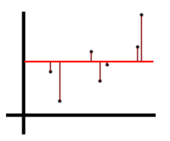

R Squared Measure of Fit
Components
Suppose we’ve got a spattering of points that look like the following
from IPython.display import Image
Image('images/r2_points.PNG')
We’d say that the Total Sum of Squares represents the combined amount of variation in Y across all points. In this case, we measure and sum the distance of each point (maroon) from the average Y value (red).
We square each value when we sum so values above and below the average height don’t cancel out.
Image('images/r2_tss.PNG')
Then consider fitting a Linear Regression to these points and plotting the proposed form, $\hat{y}$, in blue
We’d then say that the Residual Sum of Squares represents the total distance from each point to the line of best fit– again, squared and summed.
Image('images/r2_rss.PNG')
$R^2$ Statistic
Simply put, the $R^2$ statistic of a Linear Regression measures the proportion of variance of Y explained by variance in X. In other words, “what percentage of all variation in the target can we model using our attributes?”
To arrive at this, we want to quantify the amount of variation not explained by X– which is simply the total residual error as a fraction of all variation
$\text{Unexplained error} = \frac{RSS}{TSS}$
If “the proprotion of all error” adds up to 100 percent, then finding the R-squared value simply means subtracting the above from 1.
$R^2 = 1 - \frac{RSS}{TSS}$
This gives us “the percentage of variation in Y that we can explain using X”
Extending
To solidify this intution, if we can perfectly model our data points with a straight line, as below, then we’d say that 100% of the variation in Y can be explained by variation in X– or that $R^2 = 1$
Image('images/r2_perfect.PNG')
Conversely, if there is NO relationship between X and Y, and our “line of best fit” winds up being the same as the constant average value for Y, then R-squared is 0, as RSS = TSS, given that the two lines are identical.
Image('images/r2_imperfect.PNG')
Adjusted R-Squared
Finally, it’s worth examining the effect of adding variables to your model, with respect to R-Squared.
First consider that R-Squared is a measure of explained variance. If you were to add a variable to your model that was outright useless in prediction, it would come out in the wash of your model training. Thus, adding more variables to your model will only ever improve your R-squared.
But this obviously isn’t a desirable trait of the score, otherwise we’d litter all of our model with a host of unimportant features.
The “Adjusted R-Squared Score” corrects for this by normalizing the calculation for feature count.
$AdjR^2 = 1 - \frac{\frac{RSS}{n - d - 1}}{\frac{TSS}{n-1}}$
Where d is the number of different features. To paraphrase ISL
Once all of the correct variables have been added, adding noise variables will lead to only a very small decrease in RSS. However, incrementing
din the denominator of the numerator will outweigh this effect. Thus adjusted R-squared “pays a price” for the inclusion of unnecessary variables in the model.